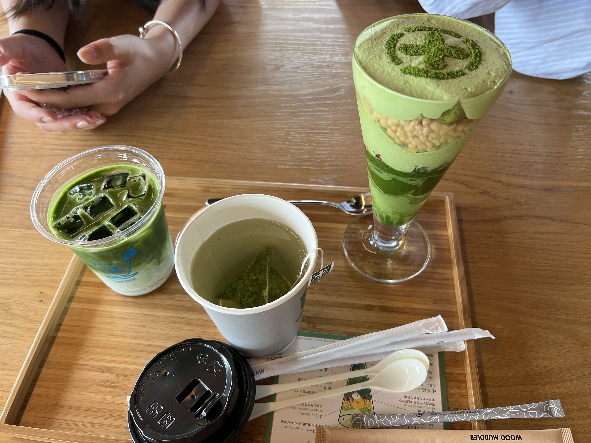

Uji : La ville du matcha
Une ville du matcha ? Ça existe ? Eh bien oui, moi non plus je ne le savais pas. Quoi de mieux que d’aller au Japon et de goûter et ramener des produits avec du matcha à la maison.

Vous verrez qu’en traversant les rues, il n’y a quasiment que des magasins qui vendent toutes sortes de produits faits à base de matcha comme les thés bien évidemment, des cheesecakes au matcha, des bonbons, des biscuits ou même du curry de matcha (oui oui, le curry est vert) que je n’ai malheureusement pas acheté pour goûter lol. Je vous avoue que je n’ai pas vraiment d’adresses spéciales à vous donner excepter de déambuler dans la rue pour visiter toutes les enseignes.
Allez, je peux vous donner une bonne adresse.
1. Nakamura Tokichi Byodo-in
C’est un café matcha et à la fois une boutique où vous pourrez acheter leurs articles à la fin de votre dégustation. Alors, je mets en garde ceux qui ont l’habitude de penser que les boissons au matcha sont sucrées et doux. En effet, si vous prenez une boisson faite à base de matcha, préparez-vous à ce que ce soit plutôt très amer, c’est le vrai goût d’un matcha et les Japonais en raffolent !
Je reconnais que je ne m’y attendais pas à ce que ce soit à ce point amer mais si vous voulez manger quelque chose de sucré je vous recommande leur glace au matcha qui, pour le coup, est très bonne et est également l’une de leurs spécialités. Vous aurez également une très belle vue sur la rivière Uji car le café est situé au bord !
Je vous conseille de regarder les différentes photos sur internet pour avoir une idée de à quoi cela peut ressembler, je trouve personnellement que le lieu absolument magnifique.
Adresse : Renge-5-1 Uji, Kyoto 611-0021, Japon